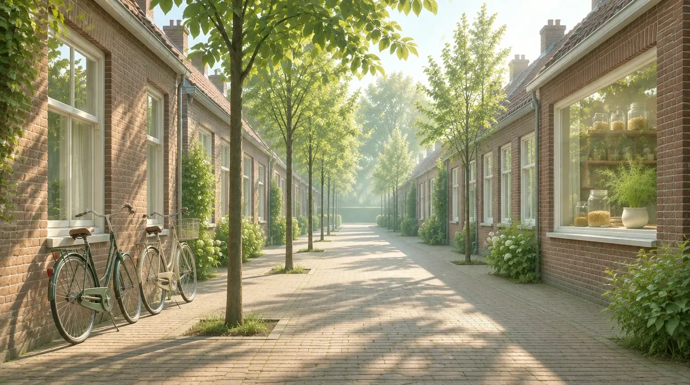
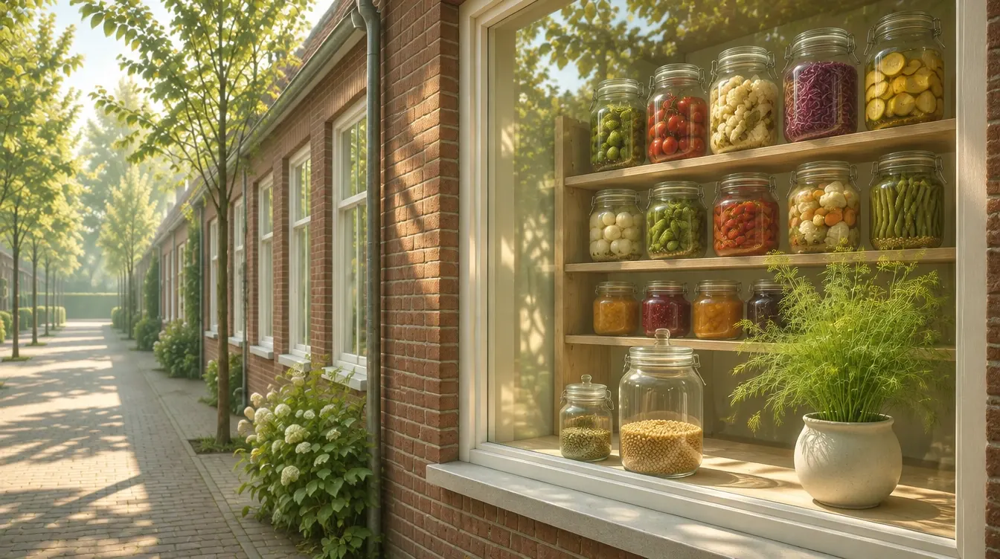
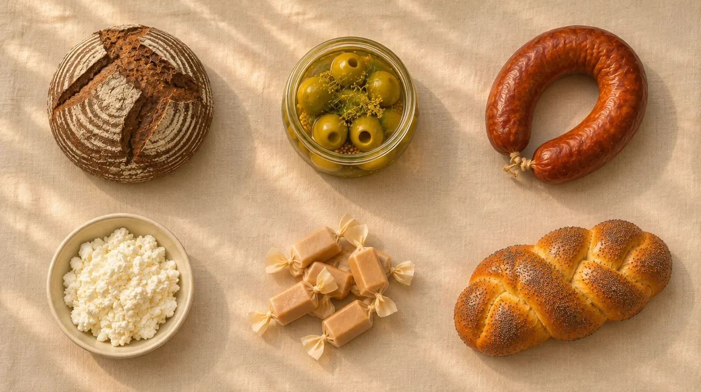
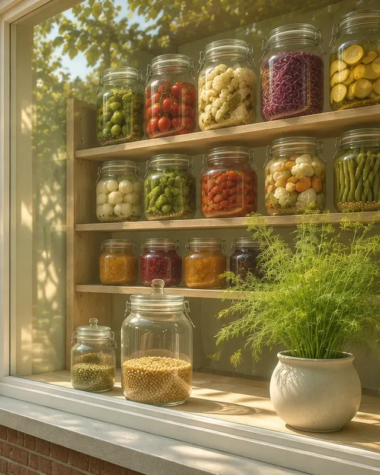
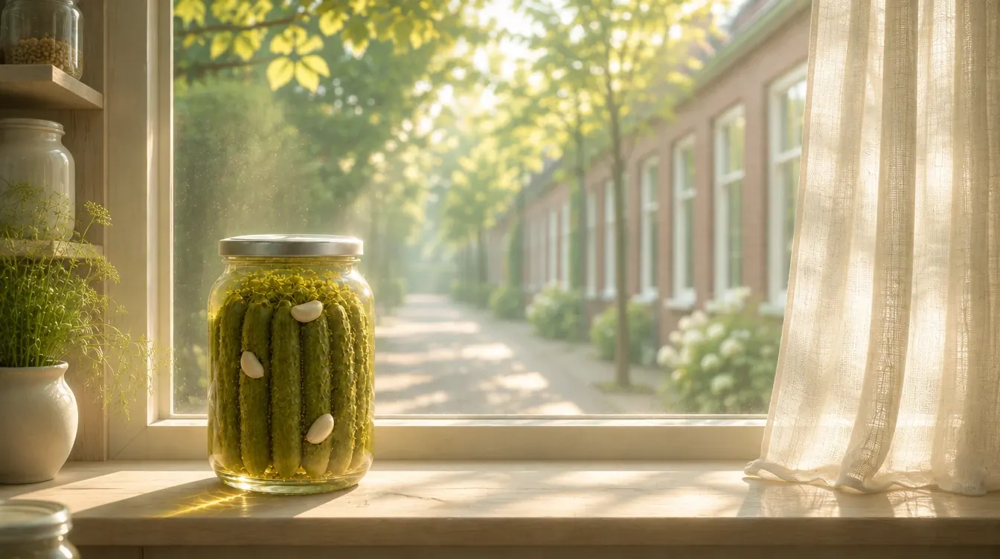

Sfeerbeeld — niet de echte gevelEen gewone straat in Waalwijk.
Bakstenen huizen, fietsen tegen de muur.

Sfeerbeeld — niet de echte gevelEn daar, achter het raam: potten.
Sfeerbeeld — niet de echte gevel.
Een stukje Polen om de hoek.
De Poolse Winkel Igor vind je aan de Mendelssohnstraat 96 in Waalwijk. Een buurtwinkel werkt anders dan een grote supermarkt. Je komt er niet voor een volle kar, maar voor dat ene brood, die ene pot, dat ene ding dat je mist.
In Nederland wonen en werken veel mensen uit Polen, ook in de regio rond Waalwijk. Voor hen is een Poolse winkel een vertrouwd adres: bekende smaken, bekende verpakkingen, een bekende taal. Voor Nederlanders is het precies andersom — een kleine reis zonder dat je de stad uit hoeft.
Daarom draait deze site om één pot ogórki kiszone. Niet omdat dat het enige is wat er staat, maar omdat het laat zien waar de Poolse keuken om draait: eenvoudige ingrediënten, zout, tijd en geduld. Smacznego.

Binnenlopen is genoeg.
- binnenlopen
- rondkijken
- vragen wat er is
- afrekenen
- smacznego
Het verhaal van de winkel.
Dit stuk vertelt de eigenaar zelf. Hoe de winkel begon, wie er achter de toonbank staat en wat je echt moet proberen — dat schrijven we samen, zodra we elkaar gesproken hebben.
Wordt ingevuld na overleg met de eigenaar.


Tot zo, om de hoek.
Mendelssohnstraat 96 in Waalwijk. Loop binnen, kijk rustig rond en vraag gerust wat er vandaag op de plank staat. Liever eerst even bellen? Ook goed.